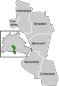
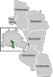
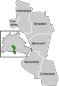

 



Thomas Gerwin
eine interaktive klingende Landkarte mit Klanglandschaften und Klängen ausgewählter Orte im Bezirk Tempelhof-Schöneberg - „…so klingt TS“
Jeder Ort hat seine ganz eigene Klanglichkeit, seinen unverwechselbaren Soundscape. Der hängt ab von der Landschaft, von der Architektur, vom Klima, von der Tier- und Pflanzenwelt – und vor allem von den Menschen, die ihn nutzen oder frequentieren. Der Bezirk Tempelhof-Schöneberg, meine Heimat in Berlin, weist aufgrund seiner Ausdehnung und der schier unglaublichen Zahl unterschiedlichster Landschaften, Örtlichkeiten, Bebauungen und Bevölkerungsgruppen eine ganz besondere Vielfalt und Interessantheit der Alltagsklänge auf. Diesen Reichtum zu dokumentieren und künstlerisch in einem digitalen Klangspiel zu präsentieren - und dabei die Aufmerksamkeit auf den Klang der Umwelt als essentiell wichtigen Bestandteil unserer Lebensqualität zu lenken, ist die Idee dieses Projektes.
Die TS-Bezirksklangkarte bringt auf einer Landkarte des Bezirkes auf einem Touchscreen ausgewählte Orte aus ganz Tempelhof-Schöneberg interaktiv zum Klingen. Auf diese Weise kann JedeR eine ganz eigene vergnüglich-nachdenkliche Ohren-Reise durch den Bezirk unternehmen und sogar mit den O- Tönen wie auf einem Instrument spielen. Die TS-BezirksKlangKarte soll später nach und nach erweitert werden, um so irgendwann vielleicht zu einer BerlinKlangKarte zu werden – die aber eben ihren Ursprung im Bezirk Tempelhof-Schöneberg hat. Deshalb stellt das dem Dezentralen Kulturbeirat hier vorgeschlagene Projekt am Ende eine fertige und bespielbare Station in der Ufa- Fabrik s bereit – ist aber gleichzeitig als die Initialisierung des größeren Projektes zu verstehen. Dies ist also der Prototyp einer interaktiven StadtKlangKarte, die TS-BezirksKlangKarte.
Für die 1.Phase des Projektes wurden 25 Orte in ganz Tempelhof-Schöneberg ausgewählt. Vor Ort wurden mit besonderen Mikrophonen (Kunstkopf) hochwertige Tonaufnahmen gemacht. Diese Aufnahmen wurden im Elektronischen Studio zu kleinen Klangporträts verdichtet, künstlerisch gestaltet und interaktiv verfügbar gemacht.
!! Es gibt natürlich schon Ideen für geeignete Orte, es werden aber auch noch gern weitere Anregungen entgegen genommen und im weiteren Verlauf der Entwicklung einbezogen.
Konzept und O-Tonaufnahmen/-bearbeitung: Thomas Gerwin www.thomasgerwin.de Programmierung: Wilfried Kirner www.kirner-online.de
Fotos: Mariya Boyanova www.mariyaboyanova.com , Thomas Gerwin, Konstanze Thümmel
Dieses Projekt wurde freundlicherweise unterstützt vom Dezentralen Kulturbeirat Tempelhof- Schöneberg. Herzlichen Dank an die Jury, an Ute Knarr-Herriger und an Bezirksstadträtin Jutta Kaddatz.